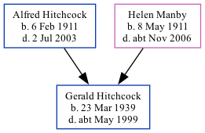

Gerald Anthony Hitchcock 1939 - c1999
[ Home ] | [ Calendar ] | [ Surnames Index ] | [ Family History ]The son of Alfred Hitchcock (a textile warehouseman) and Helen Manby, Gerald Hitchcock, the fourth cousin on the father's side of Nigel Horne, was born in West Ham, London, England on Mar 23, 19391,2,3. On Sep 29, 1939, he lived on 20 Hillfoot Road, Romford, London, England1.
He died c. May 1999 in Haringey, London3.
Parents
- Alfred James was born on Feb 6, 1911
- Helen M was born on May 8, 1911
Citations
- 1939 Register - Findmypast (was the son of the head of the household)
- England & Wales births 1837-2006 - Findmypast
- England & Wales deaths 1837-2007 - Findmypast
Media
England & Wales births 1837-2006 - BMD/B/1939/2/AZ/000564/106
England & Wales deaths 1837-2007 - BMD/D/1999/5/83147365
Family Tree
Generated by Ged2Site. Last updated on Jul 20, 2025